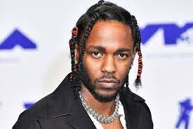

Charity Event

Kendrick Lamar participated in a charity event to support local schools in his hometown of Compton. He performed several of his hit songs and helped raise significant funds. This event was a great success and attracted a large audience, further solidifying Kendrick's reputation as a socially conscious artist who gives back to his community. His performance was highly praised, and the funds raised made a significant impact on the local schools.
Oscar Nomination

Kendrick Lamar was nominated for an Oscar for his song from the critically acclaimed movie "Black Panther". This nomination was a significant milestone in his career, showcasing his talent not just as a rapper, but also as a songwriter for film. His song "All The Stars" was praised for its powerful lyrics and compelling melody. The song's nomination brought further recognition to Kendrick's talent and versatility as an artist.
Film Event

Kendrick Lamar attended the premiere of the film "Straight Outta Compton", where he was recognized for his contributions to the soundtrack. His work on the soundtrack was praised for its lyrical depth and emotional resonance, and it played a significant role in the film's success. The film's portrayal of the rise of hip hop in Compton resonated with Kendrick, and his contributions to the soundtrack added a layer of authenticity and depth.
Business Venture
Kendrick Lamar launched a new business venture, a line of streetwear inspired by his music. This venture was met with excitement from fans and industry insiders alike. The clothing line, named "DAMN.", features designs that reflect Kendrick's unique style and the themes of his music. The line quickly sold out upon release, demonstrating the strong demand for products associated with Kendrick.
Music Festival Performance

Kendrick Lamar headlined the Coachella Music Festival, delivering a performance that was hailed as one of the highlights of the event. He performed a mix of his hit songs and new material, captivating the audience with his powerful lyrics and dynamic stage presence. His performance was a testament to his status as one of the leading figures in contemporary hip hop.
Collaboration Announcement

Kendrick Lamar announced a collaboration with fellow artist J. Cole. Fans of both artists have eagerly anticipated this collaboration, and the announcement was met with widespread excitement. The collaboration is expected to result in a joint album that will showcase the talents of both artists. Given the unique styles and lyrical prowess of both Kendrick and J. Cole, this collaboration is expected to be a major event inthe music industry.
Grammy Awards

Kendrick Lamar won multiple Grammy Awards for his album "DAMN.". The album was a commercial and critical success, showcasing Kendrick's lyrical skills and innovative production. The Grammy Awards recognized the album's impact and Kendrick's talent, further cementing his status as one of the leading artists in the music industry.
Community Outreach

Kendrick Lamar launched a community outreach program in Compton, providing resources and support for local youth. The program aims to inspire and empower young people through music and education. Kendrick's commitment to his community is a testament to his character and his desire to use his success to make a positive impact.